B009 · reference-led corridor encounter
Captured 2026-10-06 through native LÖVE Scene rendering and the actual logical input controller. Gameplay frames are separated from the final two inspection cameras. These are renderer/input evidence, not owner playtest acceptance.
Play: npm run lab:benchmarks → B009. Arrows move; Enter targets/fires at full AT; X opens the command menu; Escape cancels an open menu or exits the lab.
Before: auditorium prototype
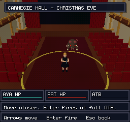
The first version put the rat in the wrong room, displayed a permanent range circle and used a large bottom HUD.
After: backstage corridor

Widescreen default with a full-surface perspective camera, edge-anchored HUD, red-door corridor (cream frames, brass push bars) extended past the Wide edges, a steeper camera that lets the floor carry the frame, and original textured meshes.
Corridor encounter
The rat now inhabits a dark Carnegie Hall backstage corridor with red doors, textured masonry and paving. Aya and the rat have contact shadows and revised proportions.
hp: 45 / ehp: 20 / atb: 0 / pe: 100 / ammo: 11 / ui: 0 / mode: 0 · Resolved state
Free movement
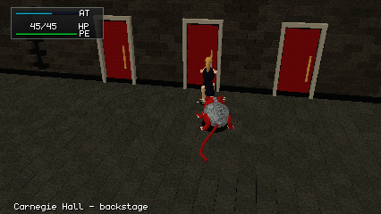
Held input drives normalized motion inside the camera-visible corridor. Two authored walking poses articulate Aya's legs.
hp: 45 / ehp: 20 / atb: 60 / pe: 100 / ammo: 11 / ui: 0 / mode: 0 · Resolved state
Wind-up
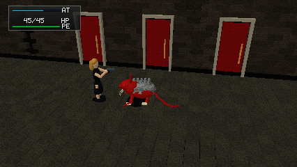
The rat raises its body before attacking. The previous permanent yellow circle and red warning ring are gone.
hp: 45 / ehp: 20 / atb: 66 / pe: 100 / ammo: 11 / ui: 0 / mode: 0 · Resolved state
Bite / lunge
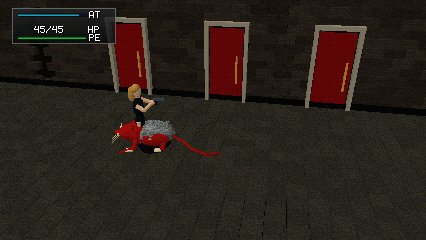
The rat moves toward the position it locked during wind-up. Moving aside evades the bite.
hp: 45 / ehp: 20 / atb: 90 / pe: 100 / ammo: 11 / ui: 0 / mode: 0 · Resolved state
Fire-tail spread
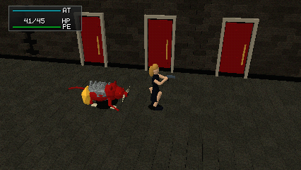
The alternate attack emits three independently resolved projectiles. This frame shows Aya moving away from their path.
hp: 41 / ehp: 20 / atb: 100 / pe: 100 / ammo: 11 / ui: 0 / mode: 0 · Resolved state
Command selection
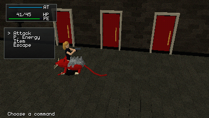
X opens the action menu at full AT. Combat and movement pause while choosing commands.
hp: 41 / ehp: 20 / atb: 100 / pe: 93.59999999999991 / ammo: 11 / ui: 1 / mode: 0 · Resolved state
Targeting
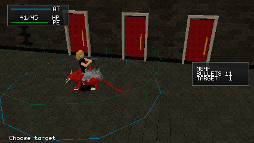
Enter at full AT goes directly to aiming. Blue ground lines, green air lines and a red target cursor appear only here. Bullets and target count occupy a separate compact overlay.
hp: 41 / ehp: 20 / atb: 100 / pe: 93.59999999999991 / ammo: 11 / ui: 2 / mode: 0 · Resolved state
Pistol impact
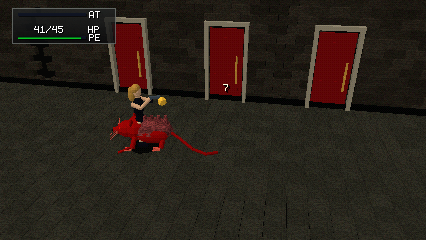
Confirming the target consumes one bullet and AT. The captured hit shows recoil, muzzle flash, hit tint and a world-anchored damage number.
hp: 41 / ehp: 13 / atb: 0 / pe: 93.59999999999991 / ammo: 10 / ui: 0 / mode: 0 · Resolved state
Parasite Energy
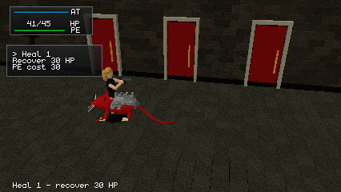
The PE menu exposes Heal 1. Healing recovers 30 HP and consumes the authored PE cost and AT turn.
hp: 41 / ehp: 20 / atb: 100 / pe: 93.59999999999991 / ammo: 11 / ui: 3 / mode: 0 · Resolved state
Heal resolved
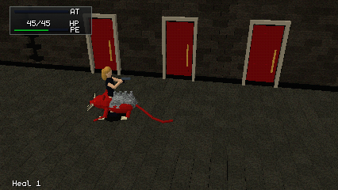
This capture shows the real Heal action result in HP and PE. Resource changes are owned by the event program.
hp: 45 / ehp: 20 / atb: 0 / pe: 63.59999999999991 / ammo: 11 / ui: 0 / mode: 0 · Resolved state
Medicine
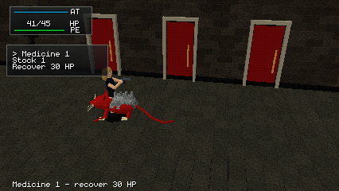
The Item menu shows Medicine 1 stock. Using it consumes one medicine and the AT turn, and clamps healing to maximum HP.
hp: 41 / ehp: 20 / atb: 100 / pe: 93.59999999999991 / ammo: 11 / ui: 4 / mode: 0 · Resolved state
Battle outcome
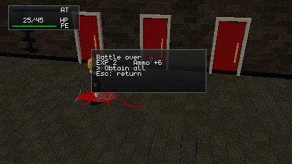
Victory stops movement, enemy actions and resource simulation. Presentation timers can finish independently.
hp: 25 / ehp: 0 / atb: 0 / pe: 94.59999999999985 / ammo: 8 / ui: 5 / mode: 2 · Resolved state
Obtain rewards
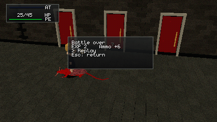
Confirm collects Ammo +6 exactly once. Confirm again replays the lab encounter; Escape returns to the launcher.
hp: 25 / ehp: 0 / atb: 0 / pe: 94.59999999999985 / ammo: 14 / ui: 5 / mode: 2 · Resolved state
Defeat
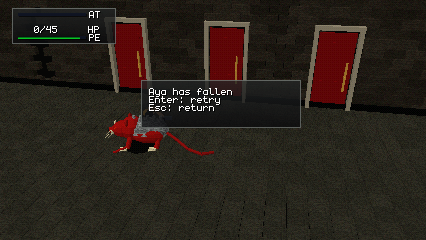
Aya uses an authored fallen pose. The stopped encounter can be retried or exited.
hp: 0 / ehp: 20 / atb: 0 / pe: 92 / ammo: 11 / ui: 0 / mode: 3 · Resolved state
Aya inspection camera
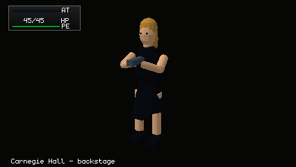
Isolated asset inspection, not a gameplay camera. Original low-poly evening-dress model with walking, recoil and defeat variants.
hp: 45 / ehp: 20 / atb: 0 / pe: 100 / ammo: 11 / ui: 0 / mode: 0 · Resolved state
Rat inspection camera
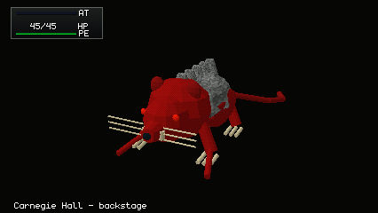
Isolated asset inspection. Crimson body, head, limbs and tail with a pale mottled back saddle and enlarged dorsal plates, following the reference palette. Wind-up and lunge share the palette. Wind-up and lunge variants are authored meshes.
hp: 45 / ehp: 20 / atb: 0 / pe: 100 / ammo: 11 / ui: 0 / mode: 0 · Resolved state
Reference basis and limits
The supplied Day 1 rat battle at 17:15 grounds the room, palette and silhouette. The original manual, printed pages 14–17 grounds free movement, command-selection pause, range presentation, ammunition, PE healing and post-battle collection.
This is an original 3D approximation, not an exact recreation. Geometry and textures remain visibly simpler than the original pre-rendered backgrounds. Animation uses authored mesh poses rather than skeletons. Exact regional damage formulas, critical-hit and miss probabilities, rate/cost tuning, escape probability, encounter sound, room transitions and full Day 1 progression are not reproduced. Out-of-range shots deterministically miss; this is a prototype simplification. PE cost 30, AT/recovery speeds, attack timing and damage bands are lab tuning.
Production G1–G4 and full staged units are checked separately. Canonical visual acceptance remains open; references are not recaptured. Earlier hosted relative G5/G6 failed while capturing base A, so they provide no candidate verdict. The lab-wide hosted check was blocked by D002 Sokoban function-valued state (existing issue #1244), before B009. Native Effekseer and owner playtest remain unavailable/pending.
Source authority: assets/authoring/environments/b009_encounter.blend. Export/source hashes are in assets/models/b009/provenance.json; frame hashes and source fingerprints are in manifest.json.